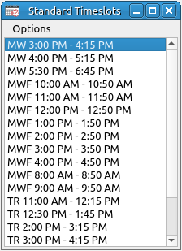

Standard Timeslots
A course can be scheduled for any time during the week. The standard timeslots allow the user to more easily schedule courses. Several of the drop options in the room viewers is to drop into a timeslot (or the start of a timeslot). So if there is a standard timeslot of MWF 8:00 AM - 8:50 AM the user can drag a course to one of those positions and drop it into the schedule. Most universities and/or departments have standard positions for course placement. These should be the standard timeslots used.

Options:
- Add New Timeslots: This invokes the new timeslot input dialog to add in new timeslots to the standard timeslots database.
- Edit Timeslot: This will open the timeslot input dialog but with only one line and the data of the currently selected timeslot loaded into the cells. Edit the fields as desired and click the OK button to finish editing.
- Delete Timeslot: This will delete the currently selected timeslot. Since these are not linked to the courses in the schedule none of the schedule will be altered. The only result is that this timeslot will not be available for dropping classes into a room viewer.